CanDisp 52
Gallery
See the CanDisp display, its screen layouts, and the hardware.
Screen layouts
CanDisp can show individual readings or combine several on one screen. Gauge 8 shows the four wheel speeds on four individual scales. Gauge 9 uses two side scales.
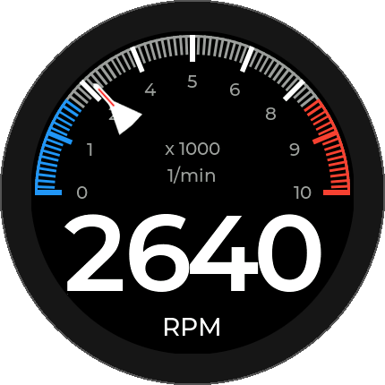
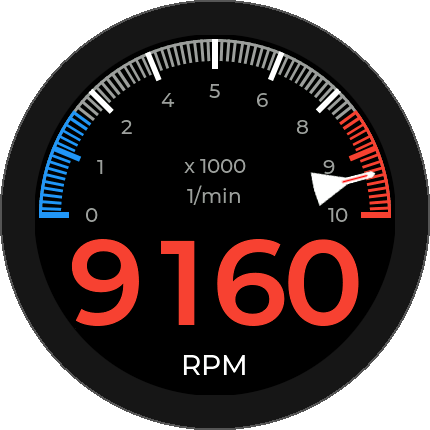
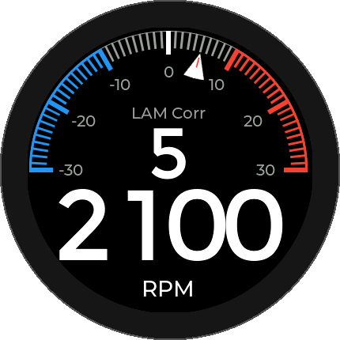
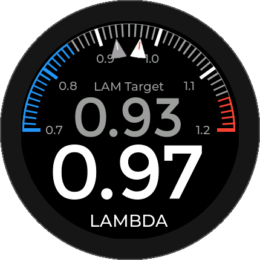
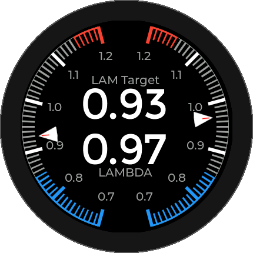
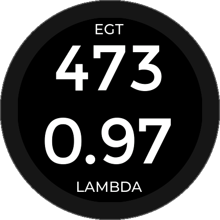
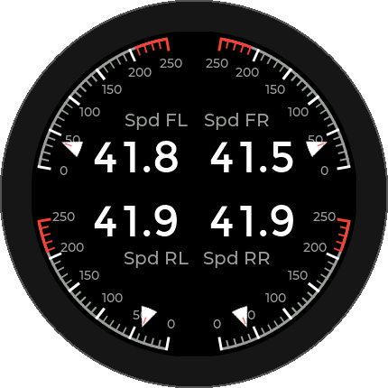
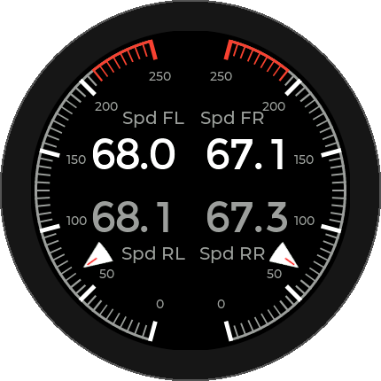
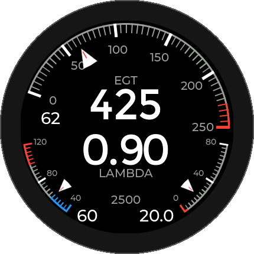

CanDisp in use
Photos of the display in real installations.
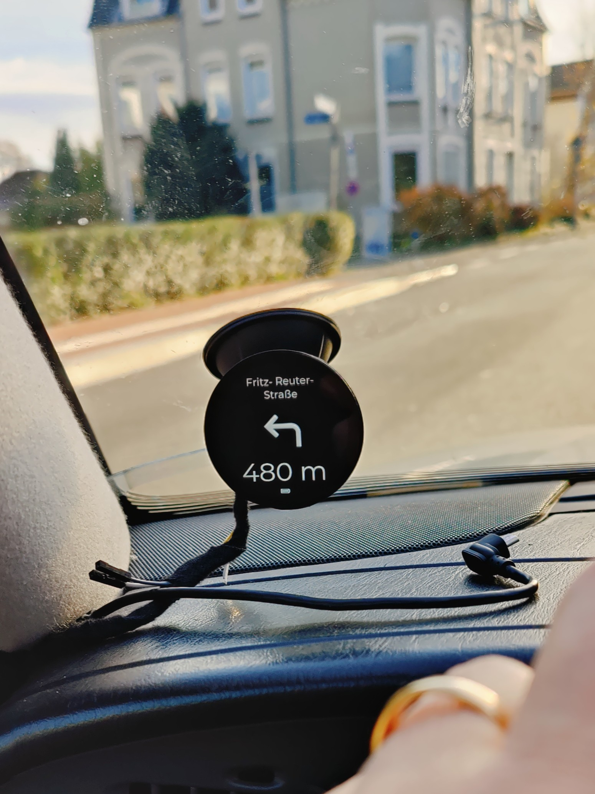
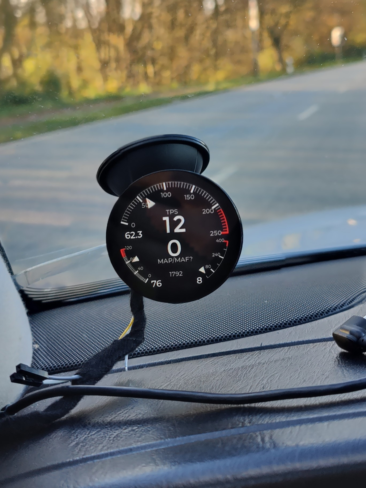
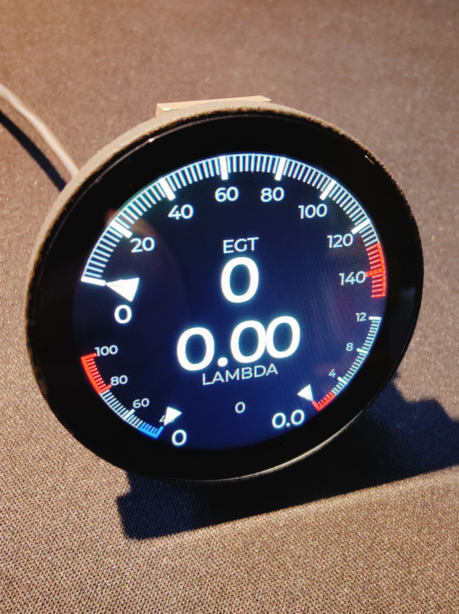
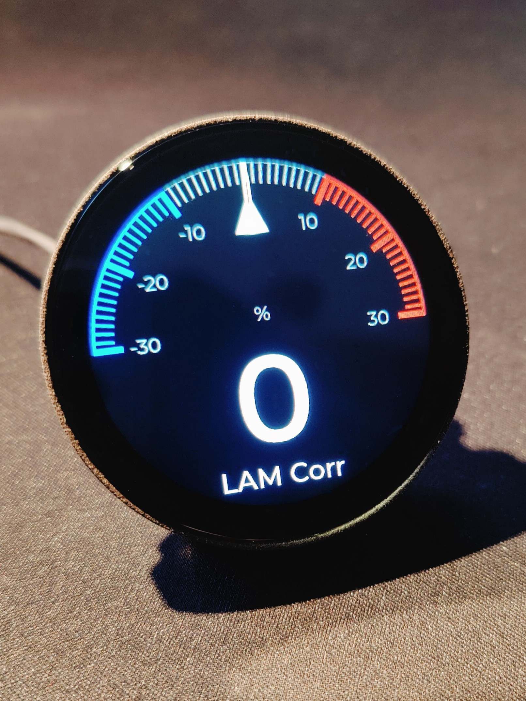
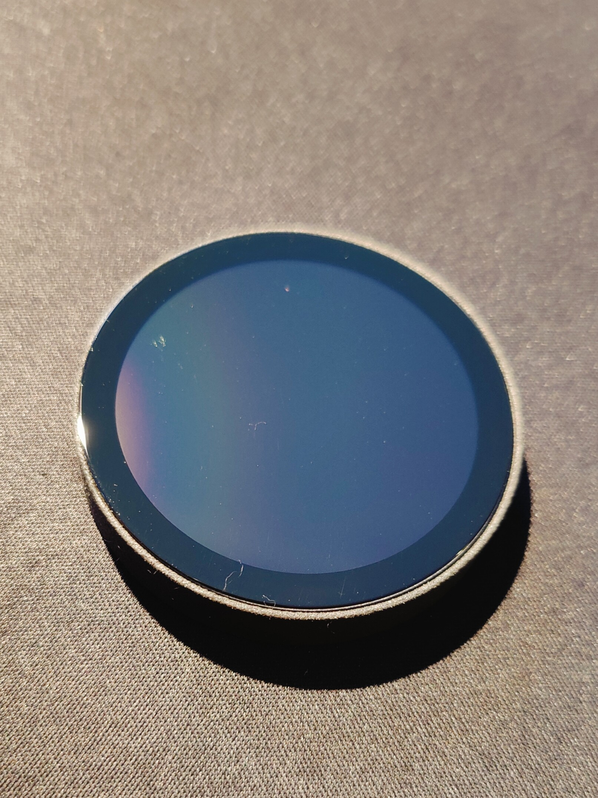
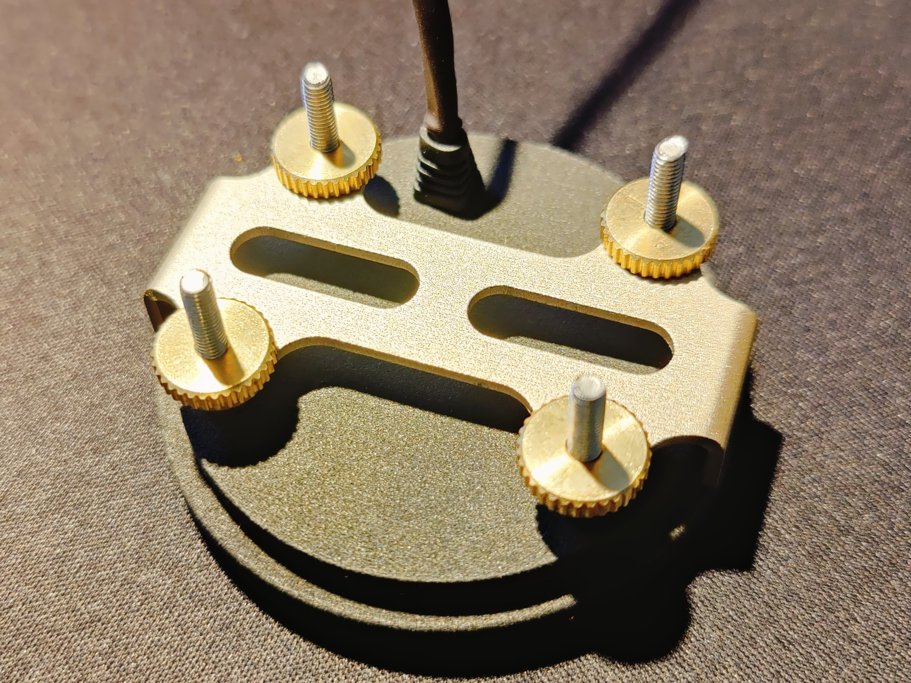
CanDisp on the road
CanDisp first shows requested and measured air mass, followed by the speeds of all four wheels.